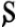

罗马尼亚的文学的发展，不过在本世纪的初头，但不单是韵文，连散文也有大进步。本篇的作者索陀威奴（Mihail Sadoveanu）便是住在不加勒斯多（Bukharest）[882]的写散文的好手。他的作品，虽然常常有美丽迷人的描写，但据怀干特（G.Weigand）[883]教授说，却并非幻想的出产，到是取之于实际生活的。例如这一篇《恋歌》，题目虽然颇像有些罗曼的，但前世纪的罗马尼亚的大森林的景色，地主和农奴的生活情形，却实在写得历历如绘。
可惜我不明白他的生平事迹；仅知道他生于巴斯凯尼（Pascani），曾在法尔谛舍尼和约希（Faliticene und Jassy）进过学校，是二十世纪初最好的作家。他的最成熟的作品中，有写穆尔陶（Moldavia）[884]的乡村生活的《古泼来枯的客栈》（Crî

ma lui mos Precu，1905）；有写战争，兵丁和囚徒生活的《科波拉司乔治回忆记》（Amintirile caprarului Gheorghita，1906）和《阵中故事》（Povestiri din razboi，1905）[885]；也有长篇。但被别国译出的，却似乎很少。现在这一篇是从作者同国的波尔希亚（Eleonora Borcia）女士的德译本选集里重译出来的，原是大部的《故事集》（Povestiri，1904）中之一。这选集的名字，就叫《恋歌及其他》（Das Liebeslied und andere Erzählungen），是《莱克兰世界文库》（Reclam's Universal-Bibliothek）的第五千零四十四号。
注 释
[881] 本篇连同《恋歌》的译文，最初发表于1935年8月《译文》月刊第二卷第六期。
索陀威奴（1880—1961），通译萨多维亚努。一生写有作品一百多部，对罗马尼亚文学有很大影响。主要作品有《米特里亚·珂珂尔》、《尼古拉·波特科瓦》等。
[882] 不加勒斯多 通译布加勒斯特，罗马尼亚首都。
[883] 怀干特（1860—1930） 德国语言学家及巴尔干问题研究家，莱比锡大学教授。著有研究罗马尼亚语法及保加利亚语法等著作。
[884] 穆尔陶 通译摩尔达维亚，巴斯凯尼和法尔谛舍尼一带山区的总称。
[885] 《古泼来枯的客栈》 即《古泼来枯的酒店》，短篇小说集，作于1904年。《科波拉司乔治回忆记》，即《乔治下士的回忆》。《阵中故事》，即《战争故事》，短篇小说集。